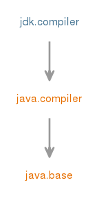

Module jdk.compiler
定义了system Java compiler及其命令行等效的实现， javac以及javah 。
javac的
该模块通过ToolProvider和Tool服务提供商接口（SPI）提供对javac的命令行访问等效，并通过JavaCompiler SPI更灵活地访问。
可通过致电ToolProvider.findFirst或名称为"javac"的service loader获取工具实例。
此外，从JavaCompiler获得的JavaCompiler.CompilationTask的实例可以下调到JavacTask以访问javac的较低级别的方面，例如Abstract Syntax Tree （AST）。
该模块使用FileSystemProvider API来定位文件系统提供程序。 特别是，这意味着如果编译器能够读取JAR文件，则jar文件系统提供程序（如jdk.zipfs模块中的）必须可用。
JAVAH
javah只作为一个命令行工具存在，不提供任何直接的API。 截至JDK 9，已被弃用。 在javac中使用-h选项。
- Module Graph:
- 
- 从以下版本开始：
- 9
{kind=link}
-
-
Packages
Exports 软件包 描述 com.sun.source.doctree 提供用于将文档注释表示为抽象语法树（AST）的接口。com.sun.source.tree 提供用于将源代码表示为抽象语法树（AST）的接口。com.sun.source.util 为抽象语法树（AST）的操作提供实用程序。com.sun.tools.javac 该包提供了 javac工具的传统入口点。Indirect Exports From Packages java.compiler javax.annotation.processing javax.lang.model javax.lang.model.element javax.lang.model.type javax.lang.model.util javax.tools
-
Modules
Requires Modifier Module 描述 transitive java.compiler 定义语言模型，注释处理和Java编译器API。
-
Services
Provides Type 描述 JavaCompiler 从程序中调用Java编程语言编译器的接口。Tool 可以从程序调用的工具的通用界面。ToolProvider 一个用于命令行工具的界面，用于提供一种无需启动新VM即可调用的方法。Uses Type 描述 Plugin javac插件的接口。Processor 注释处理器的界面。
-